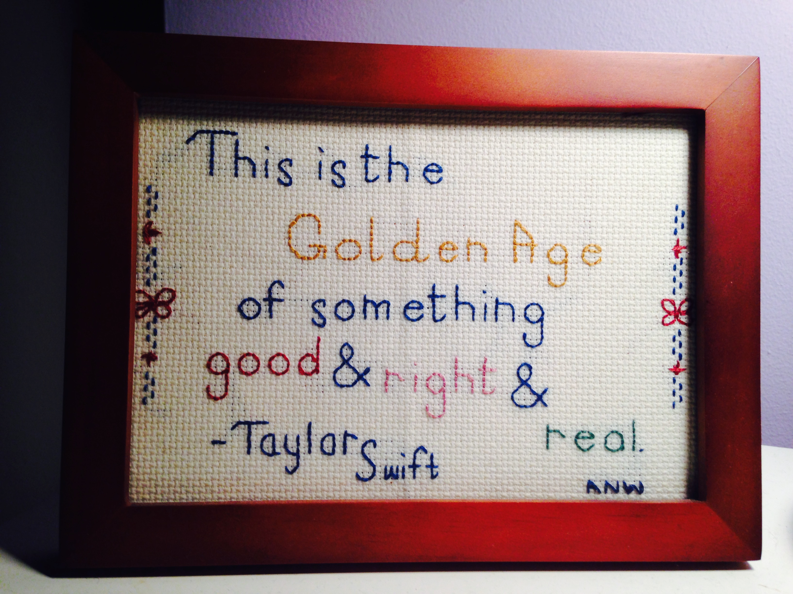

2007: You Were Born For This – Tremolo
This sounds like lying awake at 2am, oscillating rapidly between excitement and terror at the prospect of starting Yale in a few weeks.
This sounds like lying awake at 2am, oscillating rapidly between excitement and terror at the prospect of starting Yale in a few weeks.
This sounds like afternoon walks up Science Hill (by way of The Cupcake Truck) before Sophomore Slump kicked in.
This sounds like driving back to Girl Scout camp on Sunday mornings, seeing and feeling the layers of suburbia give way to rolling hills, thick woods, and rustling fields.
This sounds like is one of my favorite groups of people singing my arrangement of one of my favorite songs by one of my favorite bands. It also sounds like coming home.
*As performed by Something Extra
When looped for several months on end, this sounds like researching and writing my MPhil thesis.
This sounds like a new summer paradigm: country music, old friends, and the Baltimore Orioles.
This sounds like going from couch potato to ambitious boatie in a single season.
This sounds like a friend who really gets you:
Chose a quintessential 2015 memory before the year is over?
No way! I'm with Toby on this one.
240.338.4676
Twitter, Pinterest, Linkedin, and Goodreads icons courtesy of The Creative Networker.